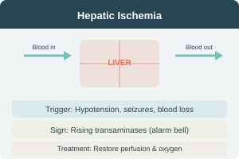

Hepatic Ischemia & Arterial Disease
Liver Ischemia
- Common during hypotensive/hypoxic events — underdiagnosed
- Characteristic: rising transaminases days after event (prolonged seizures, hypotension)
- Diagnosis: clinical suspicion + exclusion of other etiologies
- Treatment: optimize liver perfusion & oxygen delivery
- Outcome: dictated by underlying disease (multi-organ ischemia)
Hepatic Arterial Disease
- Rare outside liver transplantation — difficult to diagnose
- Hepatic artery occlusion: biliary surgery, emboli, neoplasms, polyarteritis
- Can cause significant liver damage
Hepatic Venous Disease — Overview
- Obstruction can occur in central hepatic veins, large hepatic veins, IVC, or heart
- Clinical features depend on cause & speed of obstruction
- May mimic many forms of chronic liver disease → delayed diagnosis
- Congestive hepatomegaly & ascites are most consistent features
Always consider hepatic venous obstruction in patients with atypical liver presentation.
